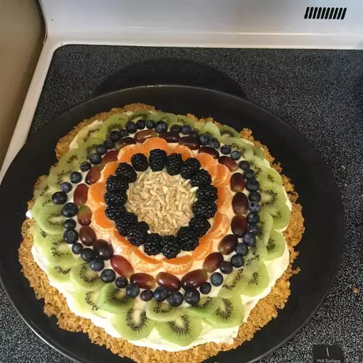

Home
Golden Fruit Pizza

Ingredients
Crust:
- 1 cup crushed cornflakes
- 2 tablespoons butter, softened
- 2 tablespoons light corn syrup
- 2 tablespoons white sugar
- 1 tablespoon honey
Frosting:
- 2 (8 ounce) packages cream cheese, softened
- 1 (7 ounce) jar marshmallow fluff
Toppings:
- ½ cup sliced strawberries, or to taste
- 2 apricots, sliced, or to taste
- 2 kiwi, peeled and sliced, or to taste
Instructions
- Preheat oven to 350 degrees F (175 degrees C).
- Mix cornflakes, butter, corn syrup, and sugar in a bowl until evenly combined; press onto a baking sheet.
- Bake in the preheated oven until crust is golden brown, about 5 minutes. Drizzle crust with honey and cool in refrigerator, about 15 minutes.
- Stir cream cheese and marshmallow fluff together in a bowl until smooth and creamy; spread over cooled crust, keeping a 1/2-inch border of crust. Chill crust in refrigerator until completely cooled, about 15 minutes.
- Arrange strawberries, apricots, and kiwi over the cream cheese layer.